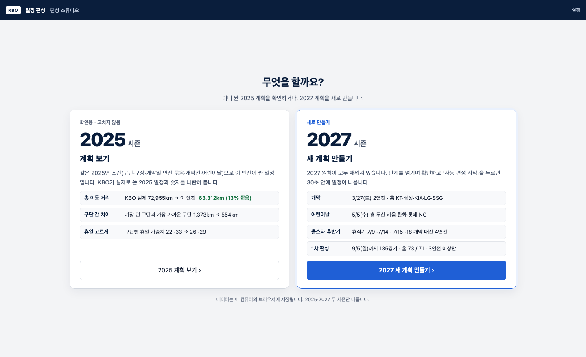
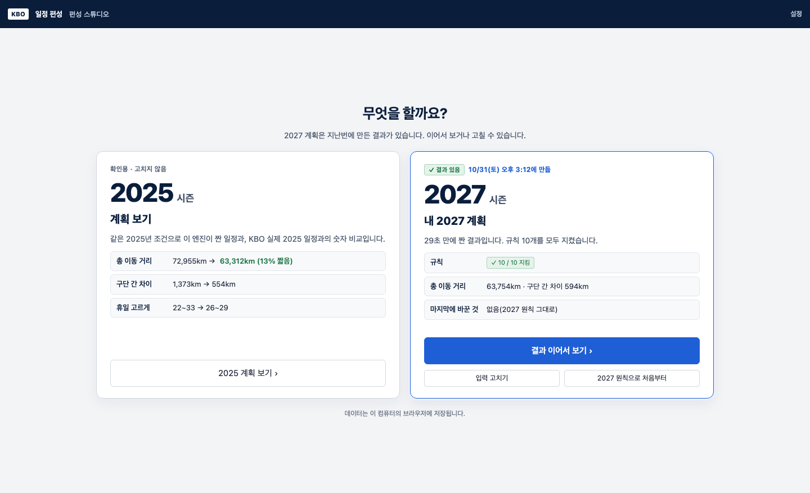
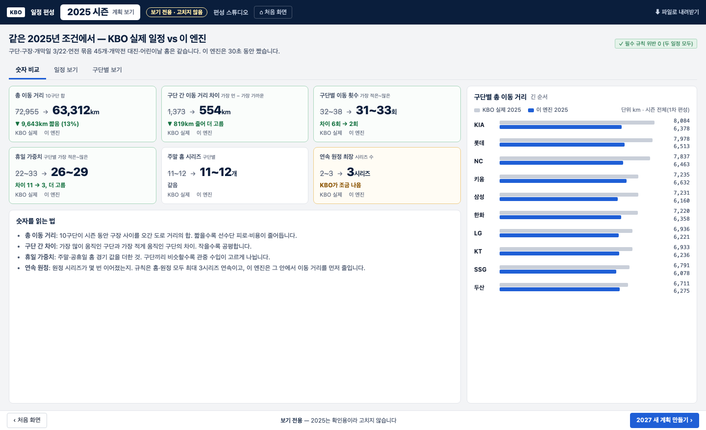
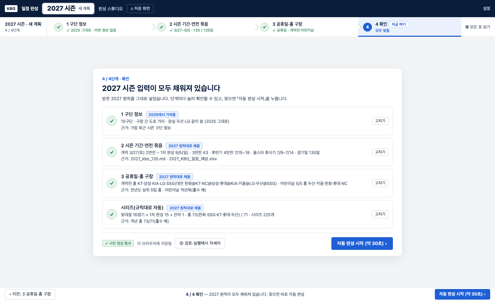
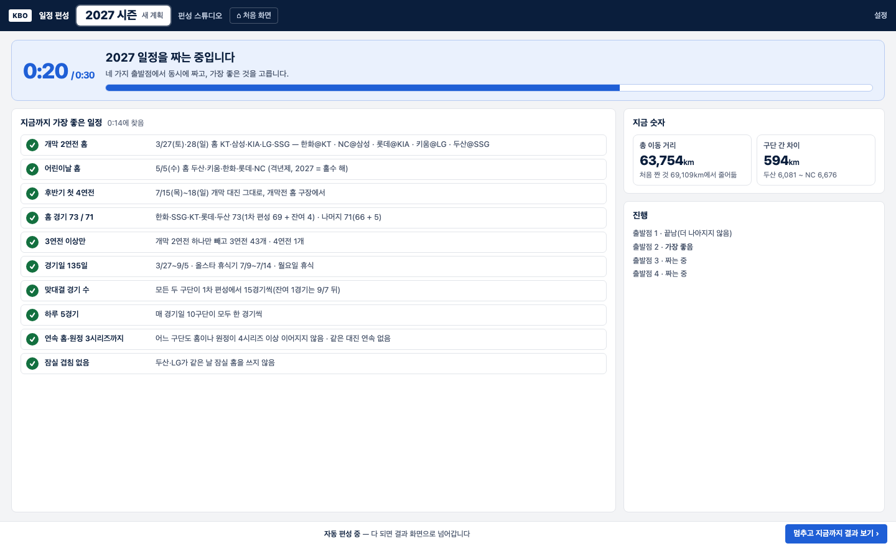
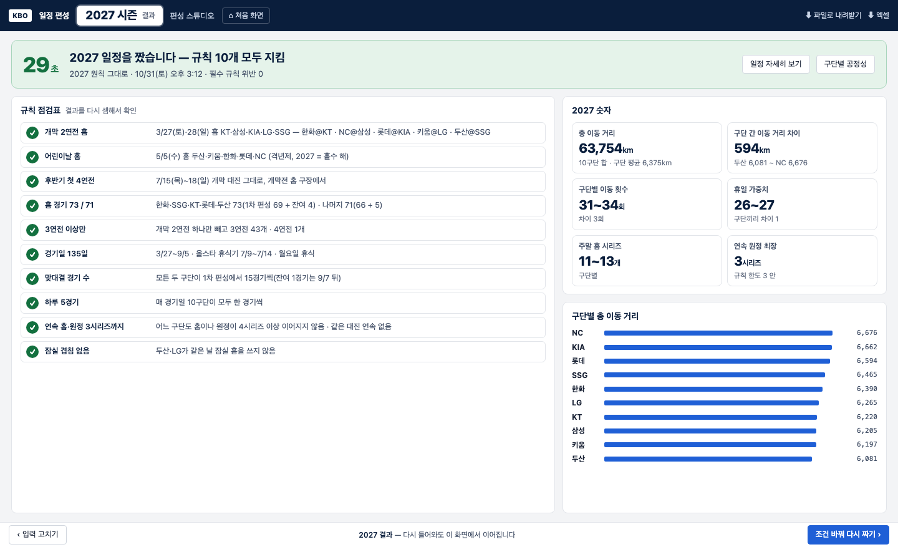
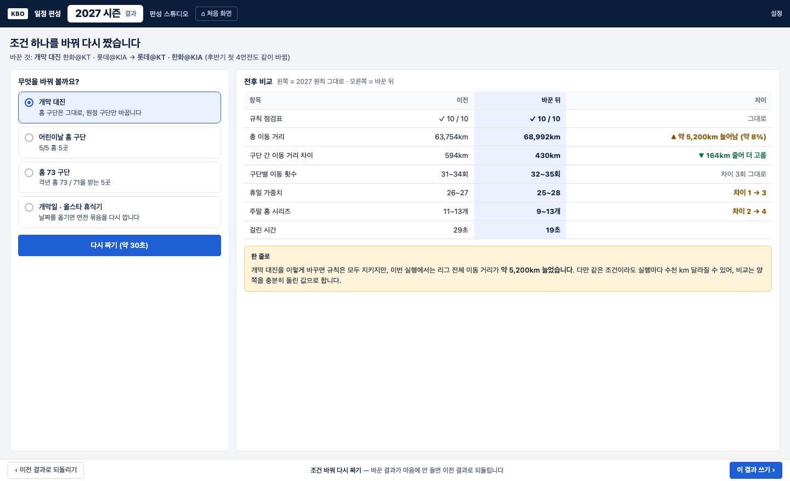

시연 흐름 시안 — 2025 보기 · 2027 만들기
2026-10-31 사용자와 정한 것: 스튜디오의 목적은 2027 계획을 직접 짠 결과를 보여 주고 이 솔루션을 쓰자고 설득하는 것. 들어가면 할 일부터 고르고(2025 보기 / 2027 만들기), 연도는 2025·2027만. 정적 시안이라 실제 화면은 아직 바꾸지 않았습니다.
순서
처음 화면→2025 계획 보기 (확인용) 또는 2027 새 계획→단계 확인(모두 채워짐)→자동 편성→결과→조건 바꿔 다시
- 숫자는 모두 실제로 돌린 값입니다(만든 숫자 없음). 2025 실제 = KBO 2025 공식 일정, 2025 이 엔진 = 같은 2025 입력으로 엔진이 30초 동안 짠 결과(10/20에 저장해 둔 것, 개막 대진 같음). 2027 = 받은 2027 원칙 입력으로 이 브랜치의 서버 엔진을 30초 돌린 결과, 결과는 브라우저 채점기로 다시 셈해 규칙을 확인했습니다.
- 주의 — 엔진 결과가 실행마다 크게 흔들립니다. 2025를 오늘 이 브랜치 엔진(출발점 4개 · 30초)으로 다시 돌리면 69,821km(KBO 실제보다 4% 짧음)였습니다. 시안의 63,312km(13% 짧음)는 10/20 엔진으로 출발점 8개를 30초씩 돌린 것 중 가장 좋은 값입니다. 출발점 하나하나는 63,312~73,960km로 KBO 실제(72,955km)보다 나쁜 경우도 있습니다. 시연 전에 더 길게·더 많은 출발점으로 돌려 흔들림을 줄여야 합니다.
- 설득 근거 네 가지가 화면마다 들어갑니다: 규칙 점검표 · 숫자 비교(2025, 같은 해끼리) · 걸린 시간 · 조건 바꿔 다시.
1 · 처음 화면 — 무엇을 할까요?

2 · 처음 화면 — 2027 결과를 만든 뒤 다시 왔을 때

3 · 2025 계획 보기 — KBO 실제 일정과 숫자 비교

4 · 2027 새 계획 — 모두 채워진 채로 확인

5 · 자동 편성 중 — 걸린 시간이 크게

6 · 2027 결과 — 걸린 시간 · 규칙 점검표 · 숫자

7 · 조건 바꿔 다시 짜기 — 전후 비교

여쭤볼 것
- 4 확인에서 바로 「자동 편성 시작」으로 갈까요(시안), 아니면 지금처럼 ② 검토·실행 화면을 한 번 거칠까요?
- 2025 보기에서 KBO가 나은 항목(연속 원정)도 그대로 보여 줄까요? 시안은 보여 줍니다 — 숨기면 오히려 믿음을 잃기 쉽습니다.
- 2027 결과 뒤의 ③ 결과·수정 · ④ 공정성·배포 화면은 결과 화면의 단추(일정 자세히 · 구단별 공정성)로만 들어가게 할까요?
- 엔진 흔들림 줄이기: 시연용 결과(2025 보기 · 2027 기본)는 미리 길게 돌려 저장해 두고, 「조건 바꿔 다시」는 출발점을 늘리거나 시간을 늘릴까요? 지금 30초 · 출발점 4개로는 조건 하나 바꾼 차이가 흔들림에 묻힐 수 있습니다.
- 개막전 「홈 구장만 지정」은 지금 2027 데이터에서 아무것도 바꾸지 못합니다. 시리즈를 만들 때 개막 2연전·후반기 4연전 대진을 기본 5쌍으로 미리 정해 버려서, 엔진이 고를 상대가 없습니다(실제로 돌려 보니 기본 대진 그대로). 「상대는 엔진이 고른다」를 하려면 시리즈 만드는 방식을 바꿔야 합니다 — 할까요? 그래서 7번 화면의 바꿀 것 목록에서는 뺐습니다.
- 시연 때 상대 앞에서 보여 줄 「조건 바꿔 다시」 예는 개막 대진 맞바꾸기면 될까요?